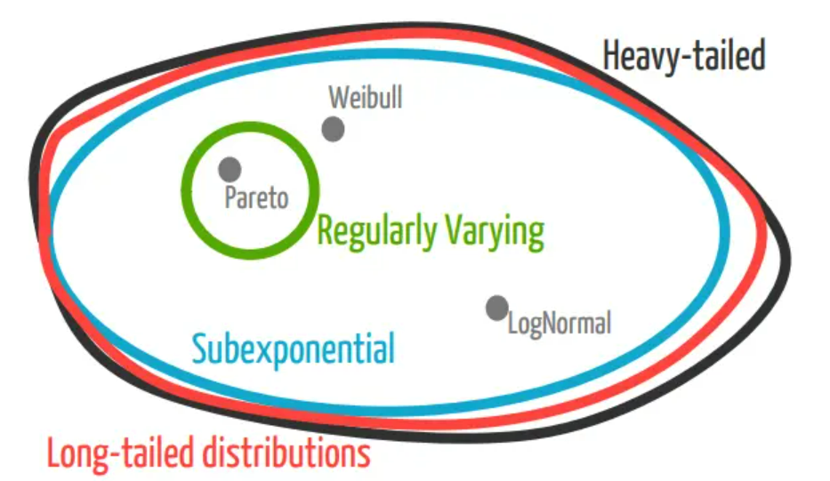
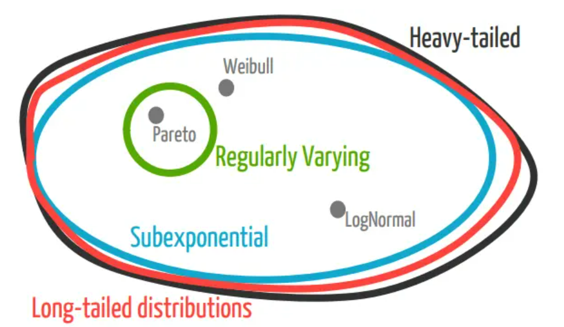

1 Law of Large Number
1.1 Folk Understanding
In simple terms, the large numbers theorem refers to that a random event may or may not occur in a single experiment, but in a large number of repeated experiments, it often shows obvious regularity, that is, the frequency of the random event will converge to a constant value, which is the probability of the event.
Another way to express it is that when the sample data is infinite, the sample mean tends to population mean.
Because in real life, we can not run an infinite number of experiments, and it is difficult to estimate the parameters of the population.
The law of large numbers connects mean values, which belong to mathematical statistics, with expectations, which belong to probability theory.
1.2 Convergence in Probability
- Weak Law: convergence in probability
- Strong Law: almost sure convergence (outlier can be negligible in measure)
1.3 Bernoulli’s Law
From the perspective of defining probability, reveals the relationship between probability and frequency.
$$
\lim\limits_{n\rightarrow \infin} P{ |\frac{f_A}{n} - p| < \epsilon } = 1
$$
1.4 Khinchin’s Law
Priori Condition: Independent Identically Distributed, $\lim\limits_{n\rightarrow \infin} P{ |\frac{1}{n}\sum\limits_{i=1}^nX_i - \frac{1}{n}\sum\limits_{i=1}^{n}E(X_i)| < \epsilon } = 1$
1.5 Chebyshev’s Law
Priori Condition: Independent Distributed, $\lim\limits_{n\rightarrow \infin} P{ |\frac{1}{n}\sum\limits_{i=1}^nX_i - \frac{1}{n}\sum\limits_{i=1}^{n}\mu_i| < \epsilon } = 1$
2 Heavy-tailed Distribution
 

Pareto Distribution:
$$
P(X>x) = \left{
\begin{align}
(\frac{x_{min}}{x})^\alpha,&\quad x\ge x_{min} \
1, &\quad x<x_{min}
\end{align}
\right.
$$$$
f(x) = \left{
\begin{align}
\frac{1}{x^\alpha}\cdot\frac{\alpha x_{min}^\alpha}{x},&\quad x\ge x_{min} \
0, &\quad x<x_{min}
\end{align}
\right.
$$Pareto Principle: states that for many outcomes, roughly 80% of consequences com from 20% of causes (the “vital few”). Other names —— 80/20 rule, the law of the vital few (states the imbalance phenomenon);
Mathematically, the 80/20 rule is roughly described by a power law distribution (also known as a Pareto distribution) for a particular set of parameters.
Zipf Distribution:
$$
f(x) = \frac{1}{x^\alpha\sum_{i=1}^{n}(1/i)^\alpha}, \ x = 1,2,\cdots,n
$$
Zipf’s law states that the value of the nth entry is inversely proportional to n, when a list of measured values is sorted in decreasing order.- Zeta Distribution: when $n\rightarrow \infty$, $\text{Zipf}(\alpha, n)\rightarrow\text{Zeta}(\alpha)$ ; Zeta is regraded as a type of pareto distribution in the discrete distribution.
$$
f(x) = \frac{1}{x^\alpha\sum_{i=1}^{\infty}(1/i)^\alpha}, \ x = 1,2,\cdots,n,\text{and}\ \alpha > 1
$$
- Zeta Distribution: when $n\rightarrow \infty$, $\text{Zipf}(\alpha, n)\rightarrow\text{Zeta}(\alpha)$ ; Zeta is regraded as a type of pareto distribution in the discrete distribution.